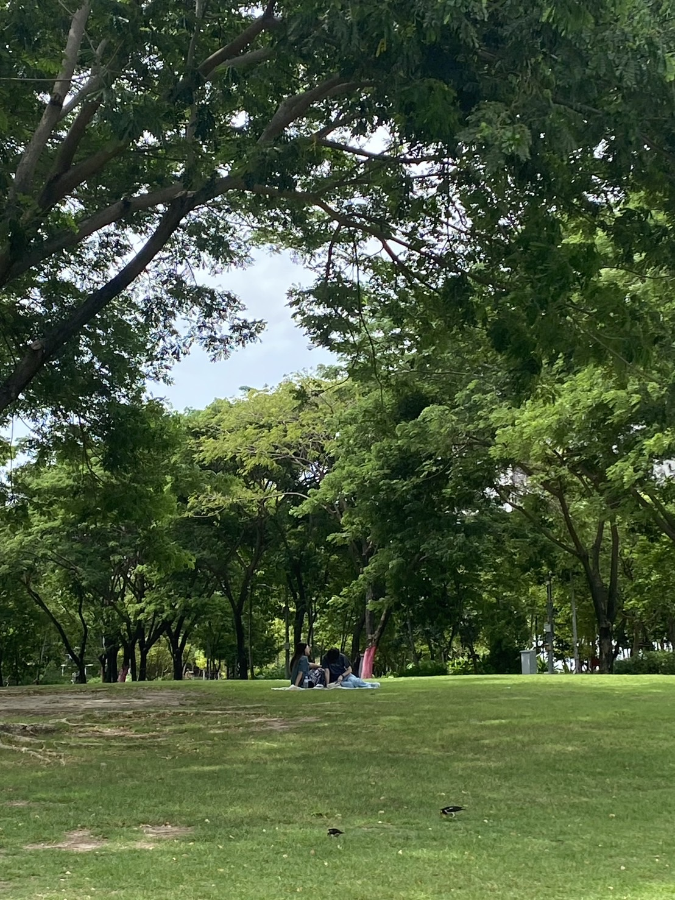

สวนจุฬา100ปี
อุทยานแห่งนี้ จึงเป็นอีกหนึ่งพื้นที่สาธารณะที่เปิดโอกาสให้เกิดการใช้พื้นที่สีเขียวเพื่อการเรียนรู้ แลกเปลี่ยนระหว่างนิสิตกับชุมชน คนกับธรรมชาติ และยังเป็นพื้นที่เปิดสำหรับกิจกรรมในด้านต่าง ๆ เพื่อชุมชนและสังคมมากมาย ไม่ว่าจะเป็นกิจกรรมด้านสุขภาพ กิจกรรมทางดนตรี และกิจกรรมทางศิลปวัฒนธรรมต่าง ๆ ร่วมกับหลายหน่วยงาน ทำให้คนในชุมชนได้เข้าถึงกิจกรรมดี ๆ มากมายตลอดทั้งปี ในแต่ละวันจึงมีคนในชุมชนและประชาชนเข้ามาใช้บริการภายในอุทยานเป็นจำนวนมาก เรียกได้ว่าเป็นพื้นที่สำหรับคนทุกเพศทุกวัยอย่างแท้จริง